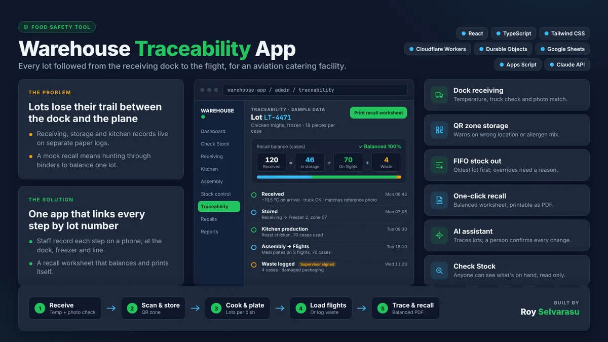

01
Food Safety Tool
Warehouse Traceability App
Every lot followed from the receiving dock to the flight, for an aviation catering facility.
- Problem
- Receiving, storage and kitchen records lived on separate paper logs, so a mock recall meant hunting through binders to balance one lot.
- Solution
- One app that links every step by lot number. Staff record each step on a phone at the dock, freezer and line, and the recall worksheet balances and prints itself.
- Dock receiving with temperature, truck check and photo match
- QR zone storage that warns on wrong location or allergen mix
- FIFO stock out; overrides need a reason
- One-click balanced recall worksheet, printable as PDF
- AI assistant traces lots; a person confirms every change
ReactTypeScriptTailwind CSSCloudflare WorkersDurable ObjectsGoogle SheetsApps ScriptClaude API
View showcase